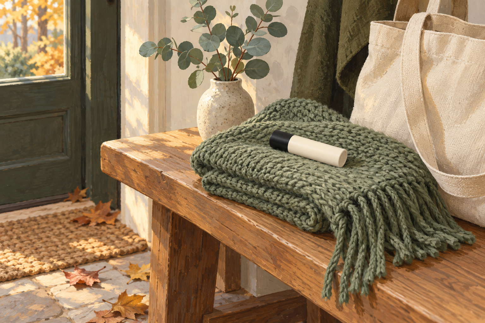
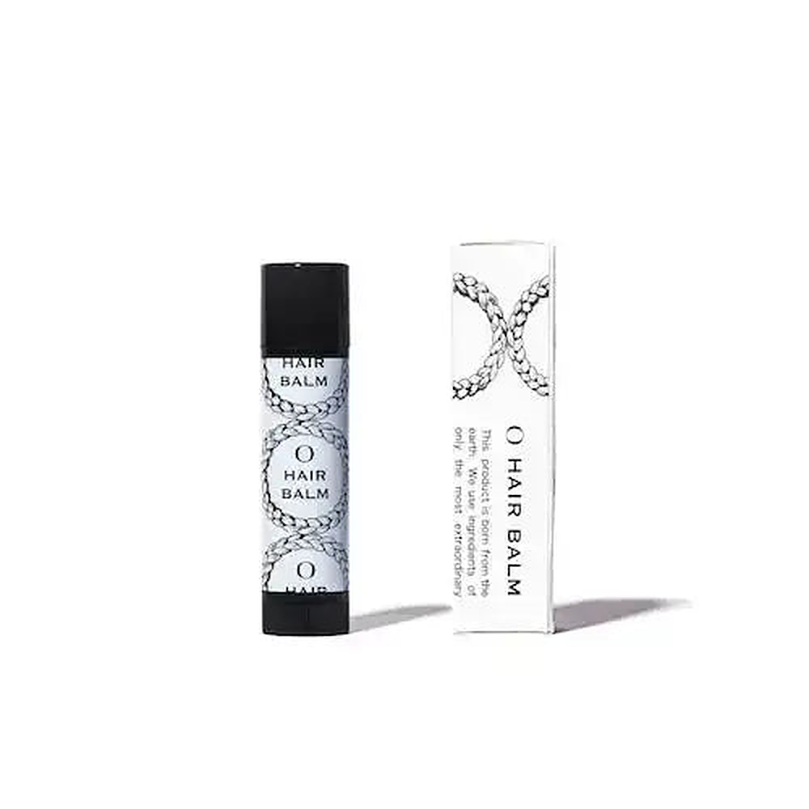

EMPATHY
こんな「家を出たあとの髪」、心当たりありませんか。
- 朝は整えて出たのに、昼過ぎには分け目や顔まわりが浮いている
- マフラーやニットを脱いだ瞬間、髪がパチッと広がる
- 外で髪が乱れても、指で押さえてごまかすしかない
- バッグの中に、髪のためのものが何も入っていない
- ヘアケア用品は、全部洗面所かお風呂に置いてある
- 朝、根元が少し湿ったまま家を出ることがある
- 暖房の効いた部屋にいると、毛先がパサついてくる気がする
一つでも頷いたなら、あと3分だけ読み進めてほしいんです。
私はこのシリーズで、15回かけてアイテムを揃えてきました。合計¥73,033。前回は、1日でいちばん回数が多い「とかす」の話まで手が届きました。
そのとき私は、ブラシについて「大きいので持ち歩きには向きません」と書いています。書いたあとで、15本を「どこで使うものか」で並べ直してみたんです。
浴室5本(シャンプー、ヘアマスク、スカルプブラシ、プレトリートメント、トリートメント)。洗面所・脱衣所9本(洗い流さないトリートメント、バーム、香水オイル、スカルプエッセンス、ドライヤー、タオル、うねり用の乳液、カラー後のスプレー、濡れ髪用のブラシ)。寝室1本(ナイトキャップ)。
15本ぜんぶ、家の中で使うものでした。バッグに入れて持って出られるものは、1本もありません。

IF NOTHING CHANGES
正直に言うと、いちばん引っかかったのは「外で髪が乱れること」じゃありません。
家の外にいる時間のほうが長いのに、15回とも家の中の話しかしていなかったことです。
私の場合、平日は家を出てから帰るまで11時間くらいあります。平日だけで週55時間。15本のケアは、全部「家を出る前」か「帰ってから」で、その間は何もしていませんでした。
でも、髪がいちばん乱れるのは、たぶん家の外です。風、マフラー、ニット、暖房の効いた室内。10月に入って空気が乾いてきて、静電気でパチッとくる季節が始まりました。
朝は整えて出たのに、昼過ぎに鏡を見ると、分け目や顔まわりがふわっと浮いている。それを指で押さえて、なんとなくごまかして、席に戻る。毎年その繰り返しでした。
ここが厄介なところで、家の外の髪は「家に帰ったら直せばいい」と思ってしまうんですよね。でも帰るころには、もう誰にも見られない時間です。人にいちばん長く見られているのは、直せなかった11時間のほうなのに。
第12弾では「寝ている間は、意志そのものが使えない」と書きました。家の外は逆で、直したい気持ちはあるのに、手元に何もない時間です。
半年後も、たぶん同じです。洗面所には17本目、18本目の新しいアイテムが増えていて、それでも外では、指で押さえてごまかしている。
いちばんもったいないのは、ここです。第1〜15弾で、家の中の答えはもう出そろっているんです。出ていないのは、玄関の外のほうだけ。
──ただ、先に言っておきます。これはしっかり固めるためのものではありません。セット力はナチュラルで、4gと小さい。その線引きは後半で正直に書きます。
THE TURN
そこでたどり着いたのが、「オー ヘア スティックバーム」でした。
ここで一つ、はっきりさせておきたいことがあります。第1〜15弾で紹介してきたものは、15本とも家の中で使うものでした。
これは欠点ではありません。洗う、乾かす、整える。毎日の土台は家の中にあります。15本とも、その役割を果たしてくれました。
一方で今回のものは、メーカーが「手軽に持ち運びやすいスティックサイズ」と書いているヘアバームです。リップクリームのように繰り出して、気になったところに直接塗る。置き場所は洗面所ではなく、バッグの中です。
言ってしまえば、第1〜15弾が"家の中でどう整えるか"。そしてこの1本が"家の外でどう直すか"。家の中は15回で揃いました。16回目は、外です。
私がこの1本を選んだ理由は、大きく3つ。
15本を場所で分けて、唯一空いていた「家の外」
浴室5本、洗面所・脱衣所9本、寝室1本。家を出てから帰るまでの11時間に使えるものは、15回とも1本もありませんでした。
「乾燥する時期」と、メーカーが季節まで書いている
静電気を防止する作用もあるので、乾燥する時期の分け目や顔まわり、もみあげのポイントケアに、という説明です。10月半ばの今に、そのまま合います。
バームは2本目。でも持って出られるのは初めて
第3弾のTHE HAIR BALM 997は、家で手のひらに取って全体に伸ばす仕上げ用でした。同じバームでも、持って出られるかどうかが違います。
「家の中をどう整えるか」から、「家の外でどう直すか」へ。15回かけて家の中を揃えてきたからこそ、玄関の外に目が向きました。
※静電気を防止する作用・保湿などに関する記載はメーカーの公表内容に基づくものであり、効果を保証するものではありません。感じ方には個人差があります。
THE PRODUCT
オー ヘア スティックバームとは
オースキンの「オー ヘア スティックバーム」は、髪のデイリーケアとスタイリングができるスティック型のヘアバームです。同じブランドのO BALM(20ml・45ml)と同じ香りの、スティックタイプです。
ブランドとしてはシリーズ初登場です。第1〜15弾で登場したオラプレックス、ケラスターゼ、リンク、LOA、資生堂プロフェッショナル、SINN PURETE、ルベル、クレイツ、ハホニコ、KINUJO、ウエラ、タングルティーザーとは重なりません。

- タイプ
- スティック型のヘアバーム(繰り出して直接塗るタイプ)
- 容量・サイズ
- 4g / 直径(幅)1.5cm・高さ6.7cm(メーカー表記)
- 価格
- ¥2,420(税込・希望小売価格と同額)/ 15本の平均¥4,869の半分くらい
- 持ち運び
- 手軽に持ち運びやすいスティックサイズ。朝昼晩問わず、気になったときに使える、とメーカーは説明しています
- 静電気
- 静電気を防止する作用もあるので、乾燥する時期の分け目や顔まわり、もみあげなどのポイントケアに、とされています
- スタイリング
- ピンと立ったアホ毛や乱れた髪にサッとひと塗り。ナチュラルなセット力で、抜け感のあるスタイルをキープ、との説明
- ケア
- メドウフォームやナタネ由来成分をはじめとするバームが、髪を保湿しながら健やかに保つ。パサつきの軽減やツヤ出しも、とのこと
- 使い方
- 気になる部分に直接ひと塗り。全体にセット力が欲しいときは、手のひらに取ってから塗布する(メーカーの説明)
- 香り
- 100%天然精油による、ハーブ調の果実と花の香り(メーカー表記)
- 処方
- シリコンフリー・パラベンフリー・鉱物油フリー・合成着色料フリー・紫外線吸収剤フリー・合成香料フリー・合成ポリマーフリー(メーカー表記)
- ブランド
- オースキン・シリーズ初登場
この1本のいちばんの特徴は、置き場所が変わるという点です。これまでの15本は、どれを足しても置き場所は浴室か洗面所か寝室でした。今回は、家のどこにも置きません。バッグの中です。朝は家でいつものケアをして、外ではこれで直す。家の中の流れには何も手を加えません。
そして、選ぶときに私が見たのは「静電気」という言葉の響きではありませんでした。商品ページに全成分表示が載っていることです。ヒマシ油、キャンデリラロウ、スクワラン、ホホバ種子油、シア脂、ミツロウ。香りがオレンジ油やラベンダー油、レモン果皮油などの精油から来ていることも、成分表で分かります。
何が入っているかを全部出しているページは、書いてあることも信用しやすいと感じました。第14弾のときと同じ理由です。
※上記の静電気・保湿・パサつき・ツヤ・セット力・香りに関する記載はすべてメーカーの公表内容に基づくものです。効果を保証するものではなく、感じ方には個人差があります。
WHY IT WORKS
「で、結局バッグに1本入れると何が変わるの?」に、飾らず正直に答えます。
15回かけて家の中を整えてきたからこそ、16回目でようやく玄関の外に目が向きました。これは、15本ぶん遠回りしたからこそ出てきた、私のいちばん正直な実感です。
※上記は仕様と使い勝手に関する説明です。効果には個人差があり、特定の結果を保証するものではありません。
WHY TRUST IT
正直に言うと、私は「静電気を防ぐ」と書いてあるだけでは商品を信じないタイプです。
それでもこの1本を紹介したいと思えたのは、こんな背景があるからです。
効果ではなく、場所で選べる
静電気がどれだけ減るかは、私には測りようがありません。湿度や服の素材でも変わります。だから主な判断材料にしていません。私が納得したのは「15本とも家の中で使うものだった」という、自分で数えられる事実のほうです。
全成分が公開されている
ヒマシ油、キャンデリラロウ、スクワラン、ホホバ種子油、シア脂、ミツロウ。香りの元になる精油の名前まで並んでいます。良い言葉だけを並べて中身を出さないページより、ずっと読みやすいです。
「ナチュラルなセット力」と書いている
強くキープ、とは書いていません。できることの範囲を自分で小さく書いている説明は、それ自体が信用材料になると思っています。
使う場面が具体的
分け目、顔まわり、もみあげ、アホ毛。乾燥する時期。朝昼晩。どこにいつ使うものかが、商品ページに具体的に書かれています。何にでも効く、という書き方ではありません。
¥2,420はシリーズで3番目に安い
第1弾¥3,740、第2弾¥4,180、第3弾¥4,290、第4弾¥7,260、第5弾¥8,800、第6弾¥5,776、第7弾¥2,200、第8弾¥3,740、第9弾¥2,950、第10弾¥9,350、第11弾¥894、第12弾¥9,350、第13弾¥3,410、第14弾¥4,598、第15弾¥2,495。合計¥73,033、平均¥4,869。今回はその半分くらいです。
美容室の公式通販で買える
ALBUM ONLINE STOREは美容室ALBUMの公式通販です。私は毎回ここを確認してから紹介しています。
WHAT PEOPLE NOTICE
こんな使用感(声の傾向)
髪質も、通勤の距離も、職場の乾燥具合も人それぞれです。だからこそ、盛らずに、分かったことだけを整理してみます。
外で使う場面について
いちばん出番が多いのは、昼休みのあとと、マフラーを外したあとでした。分け目と顔まわりにひと塗りして、指で軽くなでるくらい。全体を直すわけではないので、1分もかかりません。
静電気について
メーカーは「静電気を防止する作用もある」と説明しています。ただ、静電気の起きやすさは湿度や服の素材でまったく変わるので、私が感じた違いがそのまま他の人に当てはまるとは思っていません。そこは断言しません。
手が汚れないことについて
外で地味に助かるのがここでした。バームを手に取ると、そのあと手を洗う場所を探すことになります。スティックなら直接塗れるので、そのまま次のことに移れます。
香りについて
天然精油のハーブ系の香りです。個人的には強すぎませんでしたが、職場で使うなら、香りは好みが分かれるところなので気になる人もいると思います。
大きさについて
リップクリームより少し大きいくらいなので、小さなポーチにも入ります。その分4gと量は少ないので、全体に毎日たっぷり使うものではないと思います。
期待しすぎないほうがいい部分
ここは正直に書きます。セット力はナチュラルです。しっかり固めたい人には物足りないと思います。それと、つけすぎるとベタつくはずなので、ひと塗りで足りるかを見てから足すほうが無難です。
もちろん、髪質も、外にいる時間も、季節の乾燥具合も人それぞれ。だからこそ、「自分のバッグの中に、髪のためのものが何か入っているか」で考えてみる価値があると思っています。
※上記は一般的な使用感の傾向および個人の感想であり、効果を保証するものではありません。
FAQ
よくある質問
家で使ってもいいですか?
髪全体のスタイリングにも使えますか?
静電気は起きなくなりますか?
第3弾のTHE HAIR BALM 997とはどちらがいいですか?
ベタつきませんか?
どのくらいもちますか?
同じ形のリップ用やハンド用と間違えませんか?
男性でも使えますか?
ABOUT THE PRICE
価格の考え方
オー ヘア スティックバームは ¥2,420(税込)、4gです。今回は割引なしの定価です。
これまでの15本を並べてみます。¥3,740 / ¥4,180 / ¥4,290 / ¥7,260 / ¥8,800 / ¥5,776 / ¥2,200 / ¥3,740 / ¥2,950 / ¥9,350 / ¥894 / ¥9,350 / ¥3,410 / ¥4,598 / ¥2,495。合計¥73,033、1本あたりの平均は¥4,869。今回はその半分くらいで、シリーズで3番目に安い回です。
そしてもう一度、比率の話をさせてください。私はこのシリーズで、15本・合計¥73,033を家の中に使ってきました。同じ期間、家の外の11時間のために使った金額は¥0です。──毎回この計算をして毎回笑っているのですが、私はどうやら、毎回どこか1箇所を完全に空白にしたまま買い物をしているらしいんです。
しかも今回の空白は、時間でいえばいちばん大きい空白でした。平日だけで週55時間です。
買う前に1つだけ確認してください。外で髪が乱れたとき、今は何で直しているか。指で押さえるだけで困っていないなら、急いで買う理由はありません。
それともう1つ。ALBUMの送料無料は1注文あたり税込3,980円以上なので、これ1本だとそこに届きません。前回のブラシと同じで、何か補充するものがあるときに一緒に、が無駄がないと思います。
※価格・在庫・送料条件は変動します。最新情報は必ず商品ページでご確認ください。使用感は髪質・湿度・服の素材などによって大きく異なります。
BEFORE YOU GO
安心して試すために
「結局また1本増えるだけでは?」その疑いは、まっとうだと思います。私も15回ぶん、家の中のケアを足し続けてきました。
だからこの回も、買う前に無料でできることを先に書いておきます。どれもよく言われることです。
家を出る前に、根元まで完全に乾かしておく。静電気が出たら、手を少しだけ湿らせてからなでる。マフラーやニットを脱ぐときに、急いで引っ張らない。この3つはお金がかかりません。半乾きは乱れやすい、とよく言われます。私は朝、根元が少し湿ったまま出ていました。
そのうえで、それでも外で毎日のように髪が浮いて、指で押さえるしかないなら。そのときに初めて、バッグに入れておく1本を考えてもらえればいいと思っています。
そして、いきなり16個すべてを揃える必要もまったくありません。第1〜15弾で紹介したケアを、まず自分のペースで試す。そのうえで「家の中はひと通りやったな」と思えたときに、玄関の外の11時間を思い出してもらえれば十分です。
家の中は15回で揃いました。16回目は、家の外です。
※乾かし方や静電気への対処に関する記載は一般に言われている内容です。静電気の起きやすさは湿度・服の素材などによって大きく異なります。
LAST WORD
浴室5本、洗面所・脱衣所9本、寝室1本。15回かけて、家の中はもう出揃っています。
でも、家を出てから帰るまでの11時間には、1本もありませんでした。
人にいちばん長く見られているのは、その11時間のほうなのに。
このまま17本目の新しいアイテムを洗面所に足して、「まだ足りないのかも」と思いながらまた半年過ごすのか。それとも明日の朝、根元まで乾かして家を出てみるのか。
根元まで乾かす。湿らせた手でなでる。脱ぐときに引っ張らない。ここまではお金がかかりません。明日の朝から試せます。
追伸
正直に言うと、この1本も「魔法の1本」ではありません。4gの小さなバームです。しっかり固めるものでも、静電気を必ず止めるものでもない。塗った瞬間に別人の髪になるわけでもありません。感じ方には個人差があります。
それでも私がこれを紹介したいのは、「髪がいちばん長く人に見られているのは、家の外にいる時間だ」を、16回目にしてやっと言葉にできたからです。第12弾では「意志が届かない時間」、第14弾では「扱いを変えるべき日」、第15弾では「いちばん回数が多い動作」と書きました。今回わかったのは、そのどれもが家の中の話だった、ということでした。
16回に分けて紹介してきましたが、この16個を全部揃える必要はまったくありません。とくに今回は、外で困っていないなら急ぐ理由がない回です。送料のこともあるので、何か補充するときについでに、で十分です。市販品ジプシーだった頃の私は、家でのケアばかり足していました。外に持って出る、という発想がそもそもなかった。
もし、家のケアはひと通り揃っているのに、昼過ぎの鏡で毎回もやもやしているなら。足りない最後の1つは、17本目の洗面所用ではなく、バッグの中の1本のほうかもしれません。明日、家を出る前に、自分のバッグの中を一度だけ見てみてください。それが今回いちばんお伝えしたいことです。